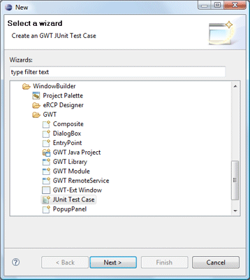
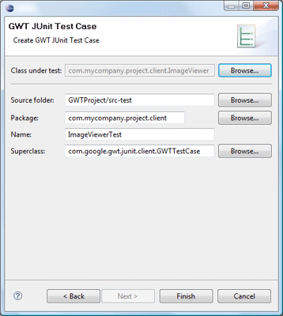
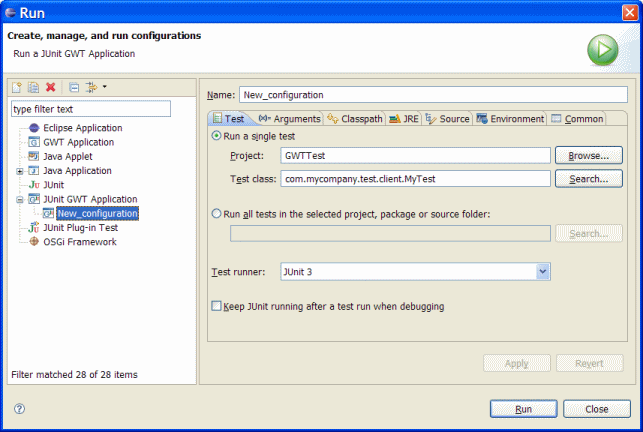
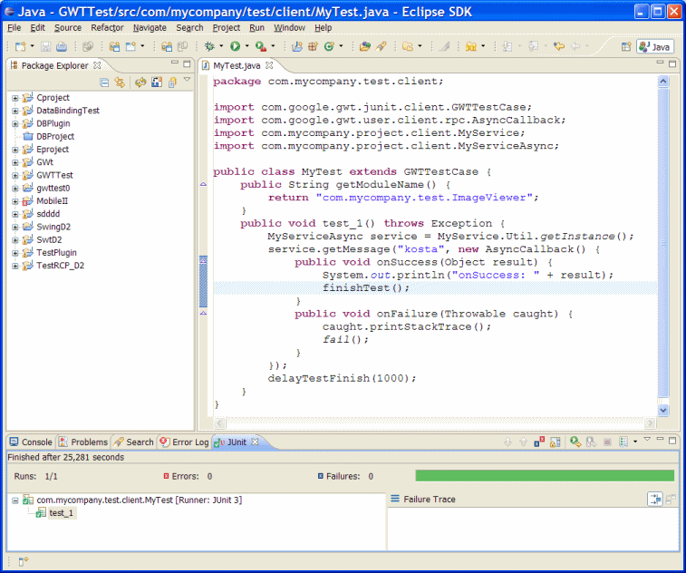

- Select the Class under test using the Browse button
- Specify the Source folder
- Specify the Package
- Specify the test class Name. Defaults to name of the class under test plus "Test".
- Select the test superclass using the Browser button. Defaults to GWTTestCase
 
JUnit GWT Application launch configuration:
- The Test Tab specifies the tests to run and the level of JUnit test runner to use
- The test launcher allows you to run single tests or collections of tests en masse
- If the individual test option is chosen, you have to specify the fully-qualified test class name along with the name of the plug-in project where the class is located. The launcher can give you more granularity for single tests by allowing you to choose to run a single method from within a test class
- You also have the option to run all tests housed within a container (project, package or a source folder). In addition to the convenience of running an arbitrary number of test cases with a single click, this option gives you the additional flexibility of not having to update the launch configuration every time you add a test class to your suite. The list of tests is dynamically recomputed prior to every launch based on the current contents of the container
JUnit GWT Application classpath requirements:
- The Classpath tab defines the location of class files used when running or debugging an application. By default, the user and bootstrap class locations are derived from the associated project's build path. You may override these settings here
- Make sure that the gwt-user.jar and junit.jar are included
JUnit GWT test results:

- You can inspect the test results in the JUnit view. This view shows you the test run progress and status
- The view is shown in the current perspective whenever you start a test run. A convenient arrangement for the JUnit view is to dock it as a fast view. The JUnit view has two tabs: one shows you a list of failures and the other shows you the full test suite as a tree. You can navigate from a failure to the corresponding source by double clicking the corresponding line in the failure trace
